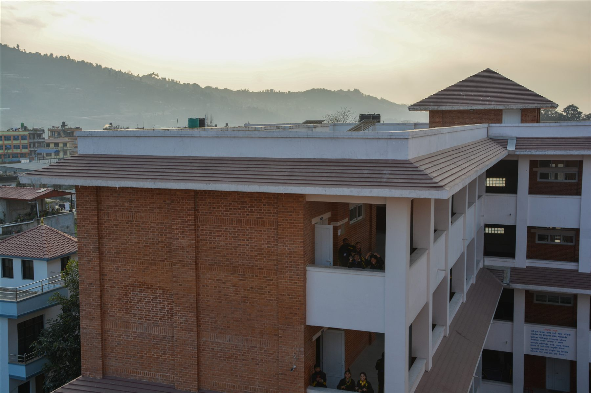
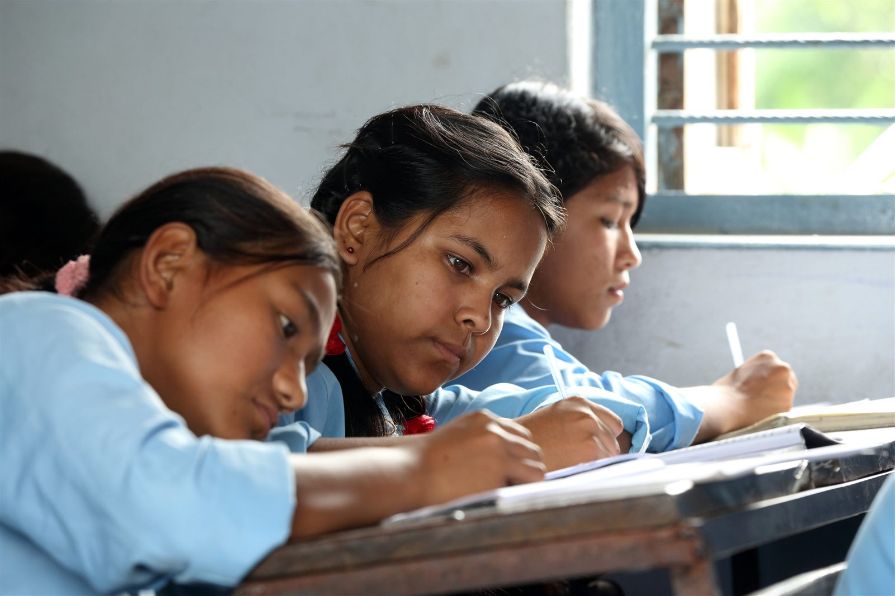
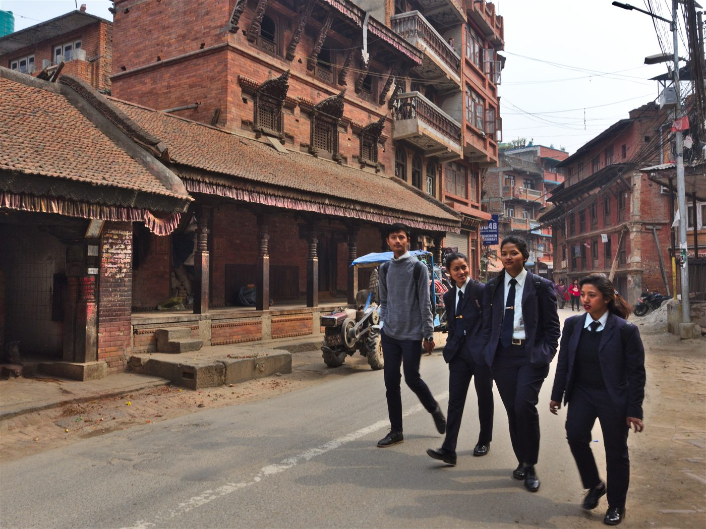
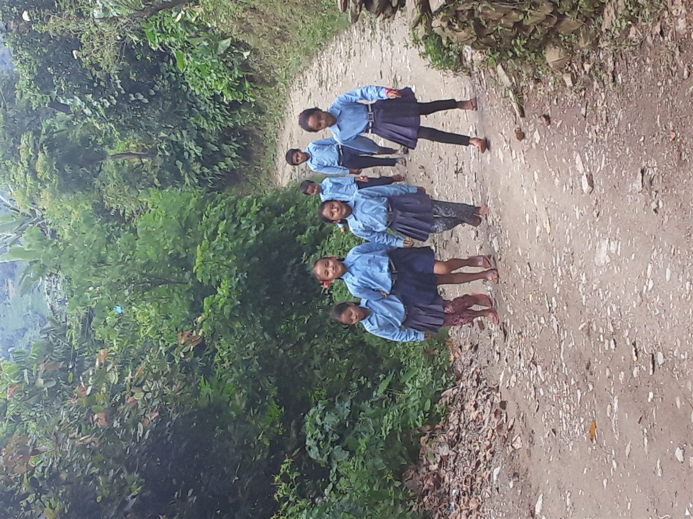

Language, festivals, and identity
Nepali language, literature, music, art, and celebration are part of the learning calendar.
Admissions open in Lalitpur, Nepal
Lalitpur Academy School blends strong academics, Nepali values, language, culture, service, sports, and practical skills so students grow with confidence and character.

Nepali theme
Students learn through local examples, Nepali festivals, civic responsibility, environmental care, and classroom projects connected to the places they know.
Nepali language, literature, music, art, and celebration are part of the learning calendar.
Field learning connects science, heritage, geography, entrepreneurship, and service.
Students build English communication, digital skills, leadership, and exam readiness.
Academic pathway
Our pathway supports steady progress from early confidence to independent secondary learning.
Play, language, rhythm, story, movement, and social habits in a warm classroom routine.
Ask about pre-primaryStrong reading, writing, mathematics, Nepali studies, science exploration, art, and sports.
See campus lifeSubject specialists, lab work, research, coding, debate, clubs, and guided independence.
View learning focusExam preparation, mentoring, leadership portfolios, community service, and career guidance.
Speak with admissions
Campus life
Each day balances classroom focus with movement, reflection, creative work, and teacher check-ins. Families receive practical updates, not vague reports.
Admissions 2026
Visit the Hattiban campus, discuss grade placement, review documents, and understand fees, transport, routines, and support before making a decision.
Meet admissions, tour classrooms, and discuss your child's current school experience.
A gentle grade-level conversation helps us understand readiness and support needs.
Complete records, receive orientation details, and prepare for the first week.
Nepal in pictures
The visual language of the site now uses Nepal-based education photography and a palette inspired by marigold, crimson tika, lokta paper, and Himalayan sky.

Students learn that school life is connected to neighborhoods, heritage streets, families, and public spaces across Nepal.

Care, dignity, and patience shape how teachers work with each child.
Students are encouraged to value Nepal while building the skills to study and work anywhere.
Family questions
Yes. Families can request a campus visit, ask about seat availability, and begin grade placement discussions for the 2026 academic year.
Transport is available on selected Lalitpur and Kathmandu Valley routes. The admissions office can confirm the current route for your area.
Culture is built into language learning, festivals, assemblies, art, music, community service, and local field experiences.
Parents receive academic updates, attendance information, notices, and scheduled meetings with teachers and coordinators.